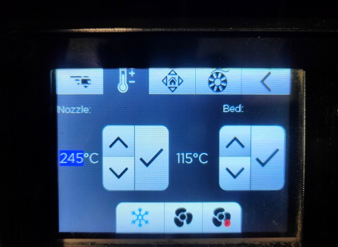
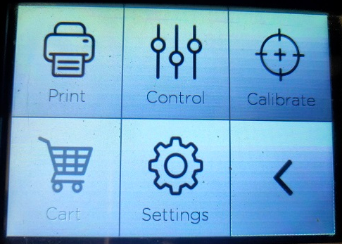
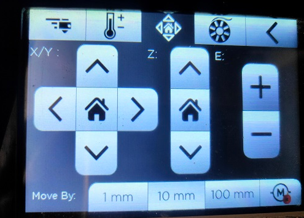
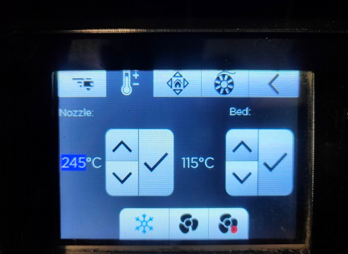
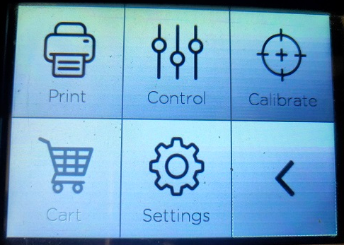
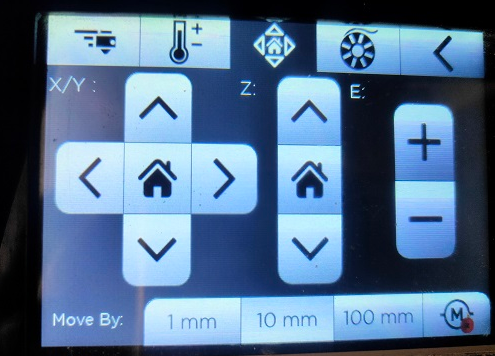

3D PRINTIG

SPECIFICATIONS:
Bed Size:250 mm x 250 mm x 300 members
Print Technology: Fused Deposition Modelling (FDM)
Filament Diameter: 1.75mstyle="font-size: 30px;">
Nozzle Temperatures:Upto 240 °C
Bed Temperature: Upto 110 °C
Compatible Materials:ABS, PLA, To ugh PLA, PLA+, PETg, PVA, PVA+,BVOH,Polycarbonate, Nylon 12*, Carbon Fiber Nylon*, Carbon Fiber PLA
Supported File Types: STL, OBJ
File Transfer :USB Pen Drive, WIFI, LAN
DAY 1

TYPES OF SUPPORTS IN 3D PRINTING:
Supports are structures that are printed alongside the main object to support overhanging or complex features during printing. There are several types of supports available in 3D printing, including grid, line, and tree supports. Tree supports, in particular, are gaining popularity due to their sustainability and efficiency. They use less material and are easier to remove compared to traditional supports, reducing waste and post-processing time. Choosing the right type of support is crucial for achieving high-quality prints with minimal cleanup.
Support Pattern:-
Zigzag and line patterns are the most common since they are the fastest to print and easiest to remove from the build. For stronger supports that are less susceptible to the printer's vibrations, grid, triangle, and gyroid are good options.
UltiMaker Cura offers two techniques to generate support:-
Normal and Tree. Both of these structure types have their own advantages and disadvantages. Normal support generates a straight structure underneath the areas of the model that need support.
DAY 2
3D PRINTING STEP BY STEP:
1. Design or Download a Model: Either create your own 3D model using CAD software or download one from a website like Thingiverstyle="font-size: 30px;">
3. Slice the Model: Use the slicing software to convert the model into layers and generate G-code, which contains instructions for the 3D printer.
4. Prepare the Printer: Make sure your 3D printer is properly calibrated and clean. Load the filament of your choice and ensure the print bed is leveled.
5. Load G-code: Transfer the sliced G-code fi le to your 3D printer, either through USB, SD card, or Wi-Fi, depending on the printer's capabilities.
6. Start Printing: Initiate the print job from the printer's interface. The printer will heat up the print bed and nozzle to the appropriate temperatures before beginning the print.
7. Monitor the Print: Keep an eye on the print as it progresses, especially during the first few layers to ensure adhesion and quality.
8. Remove Print: Once the print is complete, carefully remove it from the print bed. Use a scraper or spatula if necessary, but be gentle to avoid damaging the print bed.
DAY3

To prepare a 3D model for printing, it needs to be exported to a format that is compatible with 3D printing software, such as .stl (stereolithography) file format. Once the model is in .stl format, it can be imported into slicing software like UltimakerCura. Slicing software prepares the model for printing by generating a toolpath for the 3D printer to follow, slicing the model into layers and calculating the necessary parameters for printing.
DAY4

The Fractal Works 3D printer is an extended version of the standard Fractal Works printer, designed for use in Fab Labs and other advanced fabrication environments. This extended version offers additional features and capabilities compared to the standard model, making it suitable for more complex and larger-scale projects. The printer is known for its reliability and precision, making it a popular choice among makers and professionals alike. One of the key features of the Fractal Works 3D printer's extended version is its larger build volume, allowing users to create larger objects or multiple smaller objects in a single print job. This expanded capacity opens up new possibilities for fabrication and prototyping, enabling users to tackle more ambitious projects. Additionally, the extended version may include upgraded components or enhanced software capabilities, further improving the overall performance and usability of the printer.
dimensions
Machine Size
Classic & Advanced: 435 mm x 445 mm x 385 mm
Extended: 485 mm x 485 mm x 480 mm
Build Volume
Classic & Advanced: 200 mm x 200 mm x 200 mm
Extended: 250 mm x 250 mm x 300 mm
Print Technology :-
FFF
Filament Diameter:-
1.75 mm
Nozzle Diameter:-
0.25 mm to 0.6 mm
Weight:-
Classic & Advanced: 23 KG
Extended: 35 KG
DAY4
RPT (Prototyping) / 3D Printers help in saving time and money
Early and continuous design iterations
Shortens design and development cycles
Helps get ideas to market faster
Minimizes the cost of change
Improves efficiency and productivity
Maintain new design concepts in-house
Applications of RP/ 3D Printers
Concept Models
Verifying CAD Databases
Styling, Ergonomic studies
Functional Testing
Patterns for Metal Casting
Tooling
End use / Production Parts
Marketing Models
DAY5
Technology used to build prototypes / 3D Printers:
FDM: 3D Printers that run on FDM Technology build parts layer-by-layer by heating thermoplastic material to a semi-liquid state and extruding it according to computer-controlled paths.
FDM uses two materials to execute a print job: modeling material, which constitutes the finished piece, and support material, which acts as scaffolding. Material filaments are fed from the 3D Printer’s material bays to the print head, which moves in X and Y coordinates, depositing material to complete each layer before the base moves down the Z axis and the next layer begins.
Once the 3D Printer is done building, the user breaks the support material away or dissolves it in detergent and water, and the part is ready to use.
FDM is a clean, simple-to-use, office-friendly 3D Printing process. Thermoplastic parts can endure exposure to heat, chemicals, humid or dry environments, and mechanical stress. Soluble support materials make it possible to produce complex geometries and cavities that would be difficult to build with traditional manufacturing methods.
DAY 6
Colour TouchScreen
A Full Colour Touchscreen gives you the best experience while using the printer. You can see the preview of the file being printed, and all important metrics right on the printer itself. 3D Printing has never been easier.
 




